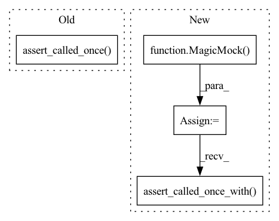

Pattern ID :25967
Before Change
proposal.draw_proposal.assert_called_once_with(N=N)
if pool is not None:
proposal.evaluate_likelihoods.assert_called_once()
else:
proposal.evaluate_likelihoods.assert_not_called()
assert sorted(proposal.indices) == list(range(samples.size))
After Change
proposal.draw_proposal = Mock(return_value=x)
proposal.compute_weights = Mock(return_value=log_w)
proposal.model = Mock()
proposal.model.batch_evaluate_log_likelihood = \
MagicMock(return_value=log_l)
with patch("numpy.random.rand", return_value=u):
RejectionProposal.populate(proposal, N=N)
assert proposal.population_acceptance == 0.5
assert proposal.populated is True
np.testing.assert_array_equal(proposal.samples, samples)
if N is None:
N = poolsize
proposal.draw_proposal.assert_called_once_with(N=N)
proposal.model.batch_evaluate_log_likelihood.assert_called_once_with(
proposal.samples
)
assert sorted(proposal.indices) == list(range(samples.size))
np.testing.assert_array_equal(proposal.samples["logL"], log_l)
In pattern: SUPERPATTERN
Frequency: 3
Non-data size: 4
Instances Fragment ID: 78467885
Project Name: mj-will/nessai
Commit Name: df638bbd58c045937979cbe3ccae1b7988a8dd77
Time: 2022-02-16
Author: michaeljw1@googlemail.com
File Name: tests/test_proposal/test_rejection.py
M Class Name: AnonimousClass
N Class Name: AnonimousClass
M Method Name: test_populate(2)
N Method Name: test_populate(3)
M Parent Class:
N Parent Class:
M File Name: tests/test_proposal/test_rejection.py
N File Name: tests/test_proposal/test_rejection.py
M Start Line: 70
M End Line: 105
N Start Line: 76
N End Line: 107
Before Change
):
out = NestedSampler.resume("test.pkl", model)
mock_pickle.assert_called_once()
assert out.model == model
assert model.likelihood_evaluations == 4
assert obj.resumed is TrueAfter Change
obj = MagicMock()
obj.model = model
obj._uninformed_proposal = MagicMock()
obj._uninformed_proposal.resume = MagicMock()
obj._flow_proposal = MagicMock()
obj._flow_proposal.resume = MagicMock()
weights_file = "weight.pt"
flow_config = dict(a=1)
with patch(
"nessai.samplers.base.BaseNestedSampler.resume", return_value=obj
) as mock:
out = NestedSampler.resume(
"test.pkl",
model,
flow_config=flow_config,
weights_file=weights_file,
)
assert out is obj
mock.assert_called_once_with("test.pkl", model)
obj._uninformed_proposal.resume.assert_called_once_with(
model,
)
obj._flow_proposal.resume.assert_called_once_with(
model,
flow_config,
weights_file, Fragment ID: 78467884
Project Name: mj-will/nessai
Commit Name: 7a5a304ee2d7b313deb71bc709f3e1b2543dd3a7
Time: 2022-08-29
Author: m.williams.4@research.gla.ac.uk
File Name: tests/test_samplers/test_nested_sampler/test_resume.py
M Class Name: AnonimousClass
N Class Name: AnonimousClass
M Method Name: test_resume(1)
N Method Name: test_resume(1)
M Parent Class:
N Parent Class:
M File Name: tests/test_samplers/test_nested_sampler/test_resume.py
N File Name: tests/test_samplers/test_nested_sampler/test_resume.py
M Start Line: 88
M End Line: 103
N Start Line: 55
N End Line: 83
Before Change
if check_acceptance:
proposal.compute_acceptance.assert_called()
proposal.evaluate_likelihoods.assert_called_once()
assert proposal.approx_acceptance == [0.4, 0.5]
assert proposal.acceptance == [0.7, 0.8]
else:
proposal.compute_acceptance.assert_not_called()After Change
)
proposal.compute_acceptance = MagicMock(side_effect=[0.5, 0.8])
proposal.model = MagicMock()
proposal.model.batch_evaluate_log_likelihood = \
MagicMock(return_value=log_l)
proposal.plot_pool = MagicMock()
proposal.convert_to_samples = MagicMock(
side_effect=lambda *args, **kwargs: args[0]
)
FlowProposal.populate(proposal, worst_point, N=10, plot=True)
proposal.forward_pass.assert_called_once_with(
worst_point, rescale=True, compute_radius=True,
)
proposal.radius.assert_called_once_with(worst_z, worst_q)
assert proposal.r == 1
draw_calls = [
call(2, r=1.0, N=5, fuzz=1.0, var=2.0),
call(2, r=1.0, N=5, fuzz=1.0, var=2.0),
]
proposal.draw_latent_prior.assert_has_calls(draw_calls)
rejection_calls = [
call(z[0], worst_q), call(z[1], worst_q), call(z[2], worst_q)
]
proposal.rejection_sampling.assert_has_calls(rejection_calls)
proposal.plot_pool.assert_called_once()
proposal.convert_to_samples.assert_called_once()
np.testing.assert_array_equal(
proposal.convert_to_samples.call_args[0][0],
proposal.x
)
assert proposal.convert_to_samples.call_args[1]["plot"] is True
assert proposal.population_acceptance == (10 / 15)
assert proposal.populated_count == 2
assert proposal.populated is True
assert proposal.x.size == 10
if check_acceptance:
proposal.compute_acceptance.assert_called()
assert proposal.approx_acceptance == [0.4, 0.5]
assert proposal.acceptance == [0.7, 0.8]
else:
proposal.compute_acceptance.assert_not_called()
proposal.model.batch_evaluate_log_likelihood.assert_called_once_with(
proposal.samples
)
np.testing.assert_array_equal(proposal.samples["logL"], log_l)
def test_populate_not_initialised(proposal): Fragment ID: 78467886
Project Name: mj-will/nessai
Commit Name: df638bbd58c045937979cbe3ccae1b7988a8dd77
Time: 2022-02-16
Author: michaeljw1@googlemail.com
File Name: tests/test_proposal/test_flowproposal/test_flowproposal_population.py
M Class Name: AnonimousClass
N Class Name: AnonimousClass
M Method Name: test_populate(2)
N Method Name: test_populate(2)
M Parent Class:
N Parent Class:
M File Name: tests/test_proposal/test_flowproposal/test_flowproposal_population.py
N File Name: tests/test_proposal/test_flowproposal/test_flowproposal_population.py
M Start Line: 339
M End Line: 386
N Start Line: 292
N End Line: 391